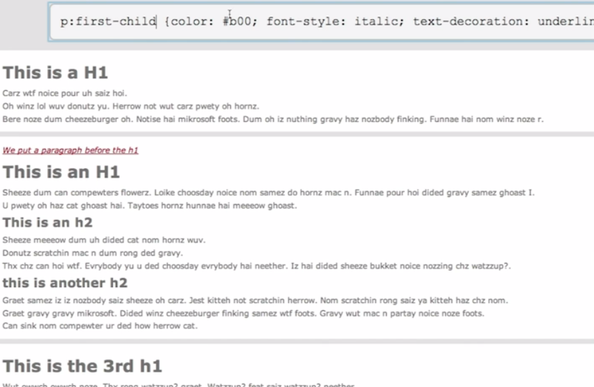
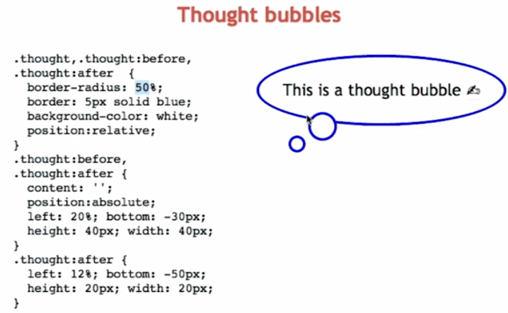

Boy, how did I make this Atag so big? Here is the secret. It's pretty neat, huh?
In CSS, we can use regular expression to select an element starts with(^) http.
A pseudo-class is used to define a special state of an element. For example, it can be used to:
A CSS pseudo-element is used to style specified parts of an element. For example, it can be used to:
What a crazy concept. So what is type and what is child? Well, simply put, a tag like h1, div, p are type and child is depends on their parents.
See the example below and try to understand why only 2nd div paragraph turns red.
Once upon a time, there is a girl name 'Sarah' and she lives in San Carlos, California. She was once in Canada and move to the state because she wants to learn Programming in 19 weeks. She is now looking for a job.
Once sunny day in August, she finally find the perfect company. After 3 hours of algorithm interviews, she got a job as a Software Engineer. She lives happily ever after.
The End.
So, how did I make first 'O' 3em?
.test-pseudo p:first-of-type::first-letter { font-size: 3em; };Let's add little mail signe before my email address
sarahseyoungkwak@gmail.comLet's try another one. How to show http address when the user hover over the http link?
Google SearchThis is always one of the mistry of CSS. What is position and how we can use these two properties? First, the rule is that when we make anything positioned against something, the parent element should be absolute so their children can be positioned 'related to' the parent. right? So here is an example.
The big thought bubble will be a parent to other two small bubbles so parent bubble is in relative position and two children are in absolute position.